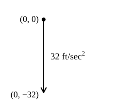
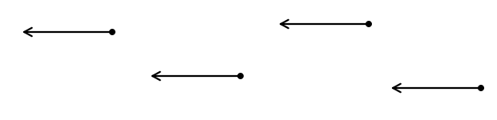
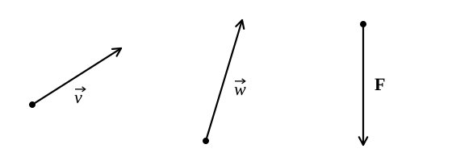
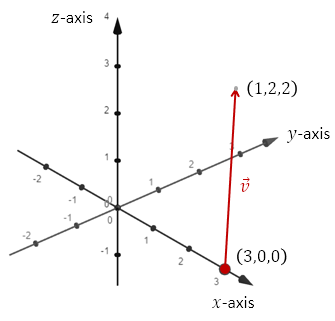
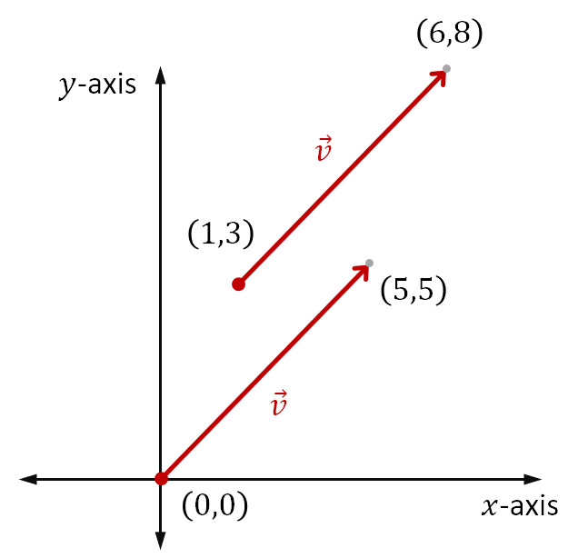
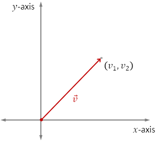
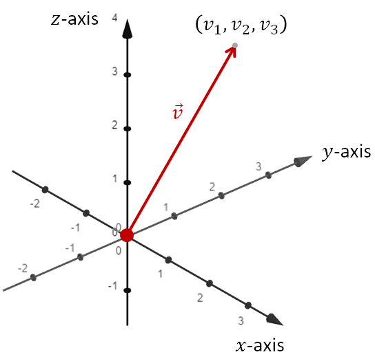

Vectors and How We Represent Them
Vectors are used to represent quantities that have both a magnitude and a direction. Examples include velocity, acceleration, and force. An example is below.
- The velocity of an object is three meters per second, in the direction due north.
A scalar is a quantity that has a magnitude but no direction. Examples include speed, mass, energy, and temperature. An example is below.
- The mass of an object is eight kilograms.
Directed line segments can visually describe a vector. The length of the line segment is the magnitude of the vector. The direction of the line segment is the direction of the vector.
For instance, we might represent the constant downward acceleration due to gravity (near the surface of Earth) with a directed line segment connecting two points, as shown in the figure.

The location of the directed line segment is irrelevant to the vector it describes. For a vector, what matters is magnitude and direction, not its placement. All of the directed line segments below can represent the same vector. All are directed leftward and are the same length.

A variety of algebraic representations are used. Most often, in our notes, this is done via a letter with an arrow above it, such as \(\vec{v}\). Sometimes we use a bold non-italicized font, such as \(\mathbf{F}\). Soon you will see how we can also use angle brackets to represent vectors.

A hat, such as \(\hat{v}\), is used only for unit vectors, which you will see in a later topic.
The magnitude of vector \(\vec{v}\) is denoted as \(\|\vec{v}\|\). Since the length of the directed line segment is used to represent the magnitude, we can find the magnitude of the vector via the distance formula.
In the graph, vector \(\vec{v}\) is represented as the directed line segment with initial point \((3, 0, 0)\) and terminal point \((1, 2, 2)\).
The magnitude of \(\vec{v}\) is calculated below.

A position vector is any vector whose initial point is at the origin.
An Example
Find the position vector \(\vec{v}\) equivalent to the vector whose initial point is \((1, 3)\) and whose terminal point is \((6, 8)\).
To Find: Subtract the corresponding coordinates, terminal minus initial.
The two vectors in the graph are equivalent because they have the same direction and magnitude (length).

A position vector \(\vec{v}\) with terminal point \((v_1, v_2)\) is often represented using angle brackets as below.
The components of \(\vec{v}\) are \(v_1\) and \(v_2\).
The \(x\) component is \(v_1\). The \(y\) component is \(v_2\).

A position vector \(\vec{v}\) with terminal point \((v_1, v_2, v_3)\) is often represented using angle brackets as below.
The components of \(\vec{v}\) are \(v_1\), \(v_2\), and \(v_3\).
The \(x\) component is \(v_1\). The \(y\) component is \(v_2\). The \(z\) component is \(v_3\).
